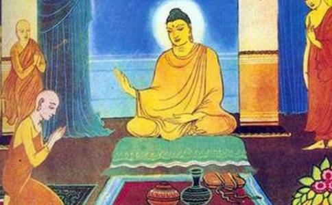

婆世踬长大后，聪明才智超越一般常人。有一天与朋友出游，经过那罗伎家，看到一位面貌清秀、丰采卓然的女子，心生爱慕，想娶为妻室。回家后，禀明父母自己的想法，父母告诉他：“我们是豪富高贵种姓，女子的家世贫穷低贱，门不当、户不对，怎能结为亲家？”可是婆世踬陷入
这一天，国王召集各方杂耍艺人表演上高木竿、空中走绳索等种种技艺。长者子婆世踬也在献艺之列，表演高空走绳索。走索完毕，却因为国王刚巧离开未见，命令再表演一次。婆世踬奉命只得再上绳索，但此次他的气力渐差，走在高空绳索中间时，摇摇欲坠，心中惶恐，却没有任何可以依靠之处。
目连尊者见此情况，凌空而至婆世踬身边，问他：“眼前，你选择保全生命，
婆世踬庆幸自己蒙尊者救护而得安隐，于是随着目连尊者去拜见
慧命阿难禀白佛：“请问世尊！婆世踬沙门，过去与那位女子有何因缘，今生贪染爱着，惑乱心智，为此几乎丧生失命？与目连尊者又是什么善因缘，于危急时蒙尊者恩济？又是何因缘能够随佛出家
佛告诉阿难：“在过去无量劫前，波罗奈国有一位大富长者，初生一子，相貌端正无比。当时，长者家人从海上来，带回一鸟卵，奉献给长者。经过一些时间，幼鸟破壳而出，幼鸟毛羽光润，长者很喜欢这只鸟，就送给爱子。长者子与鸟都渐渐长大，相互建立了默契。只要长者子骑在鸟背上，鸟即担长者子遨游各处，尽兴意足之后才返回，日日皆如此。”
“有一日，长者子听说他国国王召集杂耍艺人表演，就乘骑此鸟去该国。鸟栖息在树上，长者子在人群中观看，偶然看见国王女儿，心生情愫，就书写思慕之意，遣人送交王女，王女答应交往。这件事被国王知道后，立刻派人跟踪及追捕。长者子被捕后，被绳子缚束其身，国王下令当斩。长者子说：‘不劳烦诸君杀我，让我爬上高树，自己投身而下摔死，诸君也省去麻烦。’捉拿的人听了，让他自己摔死也罢！长者子便攀枝而上，乘骑其鸟凌空飞去，长者子因此鸟而得延命。”
“那时的长者子就是现在的婆世踬，那位王女是现在的杂艺家女子，那只鸟是当今的目连。婆世踬在过去世被色爱迷惑，被那只鸟所救；当今又因贪爱美色，险些丧命，亦由目连而得安隐。婆世踬之所以聪辩，而成就无漏智，是因为过去世，在波罗奈国有一位
大众听闻佛说此宿世因缘，莫不欢喜，当下有得须陀洹、斯陀含、阿那含、阿罗汉果者，亦有种下缘觉善根、发